目次
DriveDreamer: Towards Real-world-driven World Models for Autonomous Driving
Xiaofeng Wang*1、Zheng Zhu*1✉、Guan Huang1,2、Xinze Chen1、Jiagang Zhu1、Jiwen Lu2
1GigaAI、2Tsinghua University（清華大学）
プロジェクトページ：https://drivedreamer.github.io
arXiv:2309.09777v2 [cs.CV]、2023年11月27日
翻訳について：原文 PDF は
37_DriveDreamer_2309.09777.pdf（全 15 ページ）。本文、図の説明、図中ラベル、表、脚注、付録を訳出し、論文タイトルと参考文献は原文のまま掲載。図は原図を掲載し、英語ラベルの日本語訳を併記した。数式・数値・引用番号・コードの識別子は原文を維持。原文の記述に関する補足は「訳注」と明示し、本文と区別している。
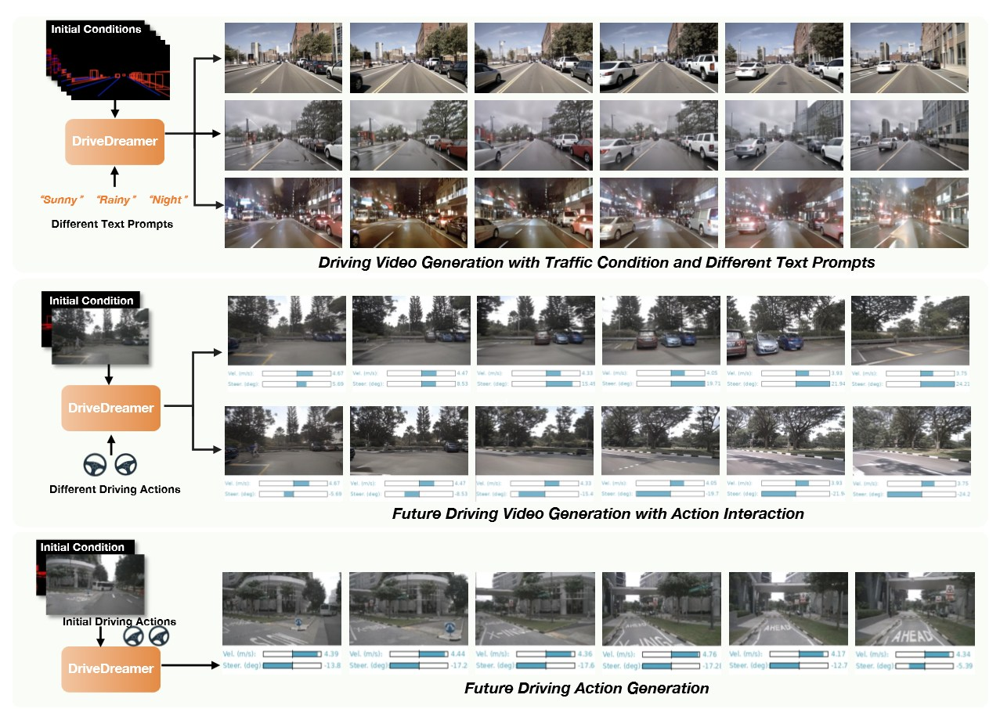
図1：DriveDreamer は運転シナリオに対する包括的な理解を示す。テキストプロンプトおよび構造化された交通制約と滑らかに整合する、制御可能な運転動画生成に優れている。DriveDreamer はまた、運転シーンと相互作用し、入力された行動に基づいて異なる将来の運転動画を予測することができる。さらに、DriveDreamer はその有用性を将来の行動の予測にまで拡張する。
図中ラベル：Initial Conditions / Initial Condition＝初期条件、Different Text Prompts＝異なるテキストプロンプト（"Sunny"＝晴れ、"Rainy"＝雨、"Night"＝夜）、Driving Video Generation with Traffic Condition and Different Text Prompts＝交通条件と異なるテキストプロンプトによる運転動画生成、Different Driving Actions＝異なる運転行動、Future Driving Video Generation with Action Interaction＝行動との相互作用による将来の運転動画生成、Initial Driving Actions＝初期運転行動、Future Driving Action Generation＝将来の運転行動の生成、Vel. (m/s)＝速度（m/s）、Steer. (deg)＝操舵角（度）
要旨
世界モデル、特に自動運転における世界モデルは、運転環境を理解する能力を持つことから、注目を集める潮流となっている。確立された世界モデルは、高品質な運転動画の生成や、安全な走行のための運転方策の生成に大きな可能性を秘めている。しかし、関連研究の重大な限界は、主にゲーム環境やシミュレーション環境に焦点を当てているため、実世界の運転シナリオの表現を欠いている点にある。そこで本論文では、実世界の運転シナリオのみから構築された先駆的な世界モデルである DriveDreamer を提案する。複雑な運転シーンにおける世界のモデル化は膨大な探索空間を伴うことから、強力な拡散モデルを活用して複雑な環境の包括的な表現を構築することを提案する。さらに、2 段階の学習パイプラインを導入する。第 1 段階で DriveDreamer は構造化された交通制約を深く理解し、続く第 2 段階で将来の状態を予測する能力を獲得する。提案する DriveDreamer は、実世界の運転シナリオから確立された初の世界モデルである。DriveDreamer を難度の高い nuScenes ベンチマーク上で具体化し、大規模な実験により、DriveDreamer が実世界の交通シナリオの構造的制約を忠実に捉えた、精密かつ制御可能な動画生成を可能にすることを検証した。加えて、DriveDreamer は現実的かつ妥当な運転方策の生成を可能にし、相互作用や実用的応用への道を開く。
1 はじめに
AGI（Artificial General Intelligence：汎用人工知能）からの洞察と身体性 AI（embodied AI）の原理に後押しされ、自動運転において大きな変革が進行している。自動運転車は、実際の運転世界と関わり、それを理解する高度なシステムに依存している。この進化の中心にあるのが世界モデルの統合である［15,17–19］。世界モデルは、ロングテールのシナリオまでも含む多様で現実的な運転動画を生成することに大きな可能性を持ち、生成した動画はさまざまな運転知覚手法の学習に利用できる。さらに、世界モデルが持つ予測能力はエンドツーエンド運転を促進し、自動運転体験の新時代を切り開く。
視覚信号から世界モデルの潜在ダイナミクスを導出する手法は、当初は動画予測において導入された［8, 11, 19］。観測された視覚系列から外挿することで、動画予測手法は環境の将来の状態を推論でき、シーン内の物体や実体が時間とともにどのように変化するかを効果的にモデル化する。しかし、複雑な運転シナリオをピクセル空間でモデル化することは、サンプリング空間が大きいために困難である［5, 7］。この問題を緩和するため、近年の研究ではサンプリング効率を高める革新的な戦略が模索されてきた。ISO-Dream［52］は、視覚ダイナミクスを制御可能な状態と制御不可能な状態に明示的に分離する。MILE［29］は、鳥瞰図（Bird's Eye View：BEV）のセマンティックセグメンテーション空間内に世界モデリングを戦略的に組み込み、模倣学習で世界モデリングを補完する。SEM2［13］は Dreamer フレームワークをさらに BEV セグメンテーションマップへと拡張し、学習に強化学習（Reinforce Learning：RL）を用いる。世界モデルにおける進展にもかかわらず、関連研究の重大な限界は、主にシミュレーション環境に焦点を当てている点にある。
本論文では、実際の運転動画と人間のドライバーの行動から包括的な世界モデルを構築する先駆けとなる DriveDreamer を提案する。実世界の運転シーンをモデル化することの複雑さを考慮し、複雑な運転環境の包括的な表現を作り出す能力を与える自動運転拡散モデル（Autonomous-driving Diffusion Model：Auto-DM）を導入する。我々は 2 段階の学習パイプラインを提案する。第 1 段階では、交通の構造情報を中間条件として組み込んで Auto-DM を学習し、これによりサンプリング効率が大幅に向上する。その結果、Auto-DM は実世界の運転シーン、特に動的な前景物体と静的な背景の理解において顕著な能力を示す。第 2 段階の学習では、動画予測を通じて世界モデルを確立する。具体的には、運転行動を用いて将来の交通構造条件を反復的に更新し、これにより DriveDreamer は異なる運転戦略に基づく運転環境の変化を予測できるようになる。さらに、DriveDreamer はその予測能力を拡張し、過去の観測と Auto-DM の特徴量から今後の運転方策を予見する。こうして、実行可能かつ予測可能な運転世界モデルが構築される。
本論文の主な貢献は次のようにまとめられる。（1）実世界の運転シナリオから導出された初の世界モデルである DriveDreamer を提案する。DriveDreamer は高品質な運転動画と妥当な運転方策の生成を同時に可能にする。（2）実世界の運転シーンの理解を高め、世界モデルの収束を早めるため、自動運転拡散モデルと 2 段階の学習パイプラインを導入する。第 1 段階の学習は交通構造情報の理解を可能にし、第 2 段階の動画予測学習は予測能力を与える。（3）DriveDreamer は交通制約と高度に整合した運転シーン動画を制御可能に生成でき（図1参照）、運転知覚手法（例：3D 検出）の学習を強化する。さらに、DriveDreamer は過去の観測と Auto-DM の特徴量に基づいて将来の運転方策を生成できる。特筆すべきこととして、DriveDreamer は nuScenes データセットにおけるオープンループ評価で有望な計画結果を達成している。
2 関連研究
2.1 拡散モデル
拡散モデルは、データに段階的にノイズを加え、その後この過程を逆転させることを学習してサンプルを生成する、確率的生成モデルの一群である［73］。これらのモデルは、画像合成［1, 14, 49, 55, 57］、動画生成［21, 23, 35, 60, 67, 74］、3D コンテンツ生成［6, 43, 53, 69］といったさまざまな応用における卓越した性能により、近年大きな注目を集め、新たなベンチマークを打ち立てている。制御可能な生成能力を高めるため、ControlNet［76］、GLIGEN［42］、T2I-Adapter［48］、Composer［32］が導入され、深度マップ、セグメンテーションマップ、Canny エッジ、スケッチなどのさまざまな制御入力を利用できるようになった。並行して、BEVControl［72］、MagicDrive［12］、DrivingDiffuson［41］はレイアウト条件を組み込んで画像生成を強化している。拡散ベースの生成モデルの本質は、世界の複雑さを把握し理解する能力にある。DriveDreamer は、これらの拡散モデルの力を活用して、自動運転シナリオという複雑な領域を理解することを目指す。
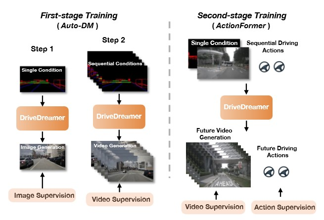
図2：DriveDreamer の 2 段階学習パイプライン。
図中ラベル：First-stage Training (Auto-DM)＝第 1 段階の学習（Auto-DM）、Second-stage Training (ActionFormer)＝第 2 段階の学習（ActionFormer）、Step 1／Step 2＝ステップ 1／ステップ 2、Single Condition＝単一条件、Sequential Conditions＝系列条件、Image Generation＝画像生成、Video Generation＝動画生成、Image Supervision＝画像による教師、Video Supervision＝動画による教師、Sequential Driving Actions＝系列運転行動、Future Video Generation＝将来の動画生成、Future Driving Actions＝将来の運転行動、Action Supervision＝行動による教師
2.2 動画生成
動画生成と動画予測は、視覚世界を理解するための有効なアプローチである。動画生成の分野では、変分オートエンコーダ（Variational Autoencoders：VAE）［8,28］、自己回帰モデル［34,56,61,70］、フローベースモデル［40］、敵対的生成ネットワーク（Generative Adversarial Networks：GAN）［46, 58, 62, 65］など、いくつかの標準的なアーキテクチャが用いられてきた。近年では、急速に発展している拡散モデル［9, 24, 25, 49, 50, 57］も動画生成の領域へ拡張されている。動画拡散モデル［21, 23, 35, 60, 67, 74］は、より高品質な動画生成能力を示し、現実的なフレームとフレーム間の遷移を生成するとともに、高い制御性を提供する。これらは、テキスト、Canny、スケッチ、セマンティックマップ、深度マップなど、さまざまな入力制御条件に対応する。
動画予測モデルは動画生成モデルの特殊な形態であり、多くの類似点を共有する。特に、動画予測は過去の動画観測に基づいて将来の動画の変化を予測するものである［8, 11, 19, 27, 64］。DriveGAN［36］は運転行動とピクセルとの対応関係を確立し、将来の運転方策を指定することで将来の運転動画を予測する。これに対し、DriveDreamer は構造化された交通条件、テキストプロンプト、運転行動を入力として取り込み、実世界の運転シナリオに忠実に整合した、精密で現実的な動画および行動の生成を可能にする。
2.3 世界モデル
世界モデルはモデルベース模倣学習において広く研究されており、さまざまな応用で顕著な成功を収めている［15–20, 37, 44, 59, 71］。これらのアプローチは通常、変分オートエンコーダ（VAE）［39］や長短期記憶（Long Short-Term Memory：LSTM）［26］を利用して、遷移ダイナミクスとレンダリング機能をモデル化する。世界モデル手法は環境の動的モデルを確立することを目的としており、エージェントが将来を予測できるようにする。この側面は、将来についての精密な予測が安全な走行に不可欠な自動運転において、極めて重要である。しかし、自動運転における世界モデルの構築には特有の課題があり、その主因は実世界の運転タスクに内在する高いサンプル複雑性にある［5］。これらの問題に対処するため、ISO-Dream［52］は視覚ダイナミクスを制御可能な状態と制御不可能な状態へ明示的に分離する手法を導入している。MILE［29］は BEV セマンティックセグメンテーション空間内に世界モデリングを戦略的に組み込み、模倣学習によって世界モデリングを強化する。SEM2［13］は Dreamer フレームワークを BEV セグメンテーションマップへ拡張し、学習に強化学習を用いる。世界モデルにおける進展にもかかわらず、関連研究の重大な限界は、主にシミュレーション環境に焦点を当てている点にある。実世界の運転シナリオへの移行は、依然として十分に探究されていないフロンティアである。
3 DriveDreamer
DriveDreamer の全体的なフレームワークを図3に示す。フレームワークは、初期参照フレーム \( I_0 \) と、それに対応する道路構造情報（すなわち、HDMap \( H_0 \) と 3D ボックス \( B_0 \)）から始まる。この文脈において、DriveDreamer は提案する ActionFormer を利用して、今後の道路構造特徴を潜在空間で予測する。予測された特徴は条件として Auto-DM に与えられ、Auto-DM が将来の運転動画を生成する。同時に、テキストプロンプトを利用することで、運転シナリオのスタイル（例えば、天候や時間帯）を動的に調整できる。さらに、DriveDreamer は過去の行動情報と Auto-DM から抽出したマルチスケールの潜在特徴を取り込み、それらを組み合わせて妥当な将来の運転行動を生成する。要するに、DriveDreamer はマルチモーダルな入力をシームレスに統合して将来の運転動画と運転方策を生成する包括的なフレームワークを提供し、それによって自動運転システムの能力を前進させる。
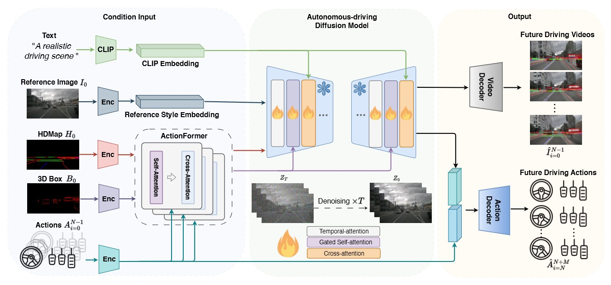
図3：DriveDreamer の全体的なフレームワーク。フレームワークは参照フレーム \( I_0 \) と道路構造情報（すなわち、HDMap \( H_0 \) と 3D ボックス \( B_0 \)）から始まる。DriveDreamer は ActionFormer を用いて将来の道路構造特徴を予測し、それが Auto-DM に与えられる条件となって、将来の運転動画 \( \hat{I}_{i=0}^{N-1} \) を生成する。加えて、テキストプロンプトによりシナリオのスタイルを動的に調整できる。モデルは過去の運転行動と Auto-DM のマルチスケール特徴を統合し、妥当な将来の運転行動 \( \hat{A}_{i=N}^{N+M} \) を生成する。
図中ラベル：Condition Input＝条件入力、Text "A realistic driving scene"＝テキスト「現実的な運転シーン」、CLIP Embedding＝CLIP 埋め込み、Reference Image＝参照画像、Enc＝エンコーダ、Reference Style Embedding＝参照スタイル埋め込み、3D Box＝3D ボックス、Actions＝行動、Self-Attention＝自己注意、Cross-Attention＝クロス注意、Autonomous-driving Diffusion Model＝自動運転拡散モデル、Denoising ×T＝デノイズ ×T、Temporal-attention＝時間注意、Gated Self-attention＝ゲート付き自己注意、Cross-attention＝クロス注意、Output＝出力、Video Decoder＝動画デコーダ、Future Driving Videos＝将来の運転動画、Action Decoder＝行動デコーダ、Future Driving Actions＝将来の運転行動（訳注：炎のアイコンは学習される層、雪の結晶のアイコンは固定された層を表すと考えられる）
実世界の運転シナリオで世界モデルを確立する際の広大な探索空間を踏まえ、DriveDreamer のための 2 段階の学習戦略を導入する。この戦略は、サンプリング効率を大幅に高め、モデルの収束を早めるように設計されている。2 段階の学習を図2に示す。第 1 段階の学習には 2 つのステップがある。ステップ 1 では単一フレームの構造化条件を利用し、DriveDreamer が運転シーン画像を生成するように導くことで、構造的な交通制約の理解を促す。ステップ 2 ではその理解を動画生成へと拡張する。第 2 段階の学習により、DriveDreamer は環境と相互作用し、将来の状態を効果的に予測できるようになる。この段階では、初期フレーム画像とそれに対応する構造化情報を入力として受け取る。同時に系列的な運転行動が与えられ、モデルは将来の運転動画と将来の運転行動を生成することが求められる。以下の節では、モデルのアーキテクチャと学習パイプラインの詳細を掘り下げる。
3.1 第 1 段階の学習
Auto-DM。DriveDreamer では、実世界の運転動画から運転シナリオをモデル化し理解するために Auto-DM を導入する。ピクセル空間のみから運転シーンを理解することは、実世界の運転シナリオにおける探索空間が広大であるために困難であることが知られている。これを緩和するため、構造化された交通情報を条件入力として明示的に組み込む。
Auto-DM の全体構造を図4に示す。ここでは交通条件が画像平面に投影され、HDMap 条件 \( \{H_i\}_{i=0}^{N-1} \in \mathcal{R}^{N\times H\times W\times 3} \) と 3D ボックス条件 \( \{B_i\}_{i=0}^{N-1} \in \mathcal{R}^{N\times N_B\times 16} \)、およびボックスのカテゴリ \( \{C_i\}_{i=0}^{N-1} \in \mathcal{R}^{N\times N_B} \) が生成される（\( N \) は動画のフレーム数、\( N_B \) はゼロパディングされた事前定義の最大ボックス数）。以下では、特に断らない限り、読みやすさのため添え字 \( i \) を省略する。制御性を実現するため、空間的に整合した条件 \( H \) を畳み込み層で符号化し、\( \mathcal{Z}_t \) と連結する。ここで \( \{\mathcal{Z}_t\}_{i=0}^{N-1} \) は前向き拡散過程［57］によって生成されたノイズを含む潜在特徴である。\( \mathcal{Z}_t \) と空間的に整合していない位置条件（すなわち、3D ボックス）については、まず位置埋め込み \( H^p \) を集約する。
\[ H^p = \mathcal{F}_\alpha([C_e, \mathrm{Fourier}(B)]), \tag{1} \]
ここで \( \mathcal{F}_a \) は MLP 層（訳注：式(1)では添え字が \( \alpha \)、本文では \( a \) と表記されているが、同一の MLP 層を指すと考えられる）、\( C_e \) は CLIP［54］によるボックスカテゴリの埋め込み特徴、\( \mathrm{Fourier}(\cdot) \) はフーリエ埋め込み［47］、\( [\cdot] \) は連結操作である。次に、ゲート付き自己注意［42］を利用して、位置埋め込み \( H^p \) を元の UNet 特徴の視覚信号 \( v \) と統合する［57］。
\[ v = v + \tanh(\eta)\cdot \mathrm{TS}(\mathcal{F}_s([v, H^p])), \tag{2} \]
ここで \( \eta \) は学習可能なパラメータ、\( \mathcal{F}_s \) は自己注意、\( \mathrm{TS}(\cdot) \) は視覚トークンのみを考慮するトークン選択操作である［42］。
運転ダイナミクスの理解能力を Auto-DM にさらに付与するため、生成動画のフレーム間の一貫性を高める時間注意層 \( \mathcal{F}_t \) を導入する。
\[ \mathcal{F}_t(v) = \mathrm{Reshape}(\mathcal{F}_s(\mathrm{Reshape}(v + \mathcal{T}_{\mathrm{pos}}))), \tag{3} \]
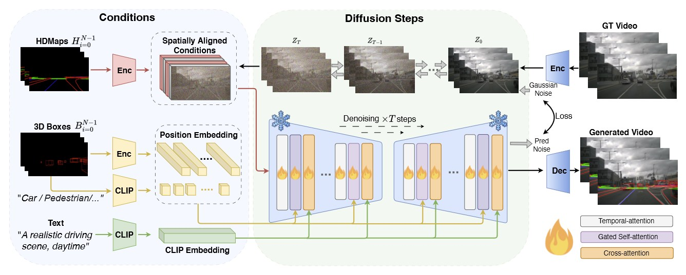
図4：Auto-DM の全体構造。Auto-DM は 3 種類の制御条件を入力として受け取る。空間的に整合した条件（すなわち、HDMap \( H_{i=0}^{N-1} \)）はノイズ画像と連結されて拡散ステップに入力される。3D ボックス \( B_{i=0}^{N-1} \) とそのラベルで表される位置条件は平坦化され、ゲート付き自己注意で利用される。テキストプロンプトはクロス注意を用いて拡散ステップに取り込まれ、生成される運転動画のスタイルに影響を与える。時間注意層は、生成される動画フレームの一貫性を確保するために用いられる。拡散ステップはノイズを推定し、入力ノイズとの損失を生成して Auto-DM を最適化する。
図中ラベル：Conditions＝条件、HDMaps＝HDMap、Enc＝エンコーダ、Spatially Aligned Conditions＝空間的に整合した条件、3D Boxes＝3D ボックス、"Car / Pedestrian/..."＝「車／歩行者／…」、Position Embedding＝位置埋め込み、Text "A realistic driving scene, daytime"＝テキスト「現実的な運転シーン、昼間」、CLIP Embedding＝CLIP 埋め込み、Diffusion Steps＝拡散ステップ、Denoising ×T steps＝デノイズ ×T ステップ、GT Video＝正解（GT）動画、Gaussian Noise＝ガウスノイズ、Loss＝損失、Pred Noise＝予測ノイズ、Dec＝デコーダ、Generated Video＝生成動画、Temporal-attention＝時間注意、Gated Self-attention＝ゲート付き自己注意、Cross-attention＝クロス注意
ここではまず、視覚信号 \( v \) を \( \mathcal{R}^{N\times C\times H\times W} \) から \( \mathcal{R}^{C\times NHW} \) へ再整形する。この形状変換により、フレーム単位の自己注意層 \( \mathcal{F}_s \) がフレーム間のダイナミクスを学習できるようになる。\( \mathcal{T}_{\mathrm{pose}} \) は正弦波関数［2］で符号化された時間的位置埋め込みを表す（訳注：式(3)では \( \mathcal{T}_{\mathrm{pos}} \) と表記されている）。最後に、視覚信号を元の次元に戻し、特徴の整合性を確保する。特筆すべきこととして、同じアーキテクチャはマルチビュー画像の生成にも拡張でき（図6参照）、その場合 \( \mathcal{F}_s \) は隣接するビューのみに注意を向ける。さらに、フレーム単位の注意とビュー単位の注意を積み重ねることで、マルチビュー動画の生成が可能になる（詳細は補足資料を参照）。
さらに、クロス注意層［57］を利用してテキスト入力と視覚信号との特徴の相互作用を促し、天候や時間帯などの運転シーンの属性にテキスト記述が影響を与えられるようにする。次に、2 つのステップからなる第 1 段階の学習パイプラインについて詳しく述べる。
ステップ 1 の学習。Auto-DM は、構造化された交通条件の単一フレームのみからの入力を取り込み、単一フレームの画像による教師と組み合わせる。構造化された交通条件として、HDMap と 3D ボックスは人手によるアノテーション、または事前学習済みの知覚手法（例えば、LAV［4］、BEVerse［77］、UniAD［31］）から取得する。次に、3 チャネルの HDMap（車線境界、車線区分線、横断歩道）と 8 頂点の 3D ボックスを画像平面に投影し、対応する条件を生成する。特筆すべきこととして、ステップ 1 の学習では時間注意層を省略しており、これによりネットワークは交通構造の制約の学習のみに集中でき、学習過程の収束が早まる。
ステップ 2 の学習。Auto-DM は構造化された交通条件の複数フレームからの入力を取り込み、運転動画を用いて教師あり学習される。ステップ 1 とは対照的に、動画から学習することで、Auto-DM は運転シナリオにおける複雑な動きの遷移をより深く理解できる。ステップ 2 では、ステップ 1 で構築した事前学習済みモデルを基に、時間注意層をモデルアーキテクチャに組み込む。これらの追加パラメータにより、Auto-DM は入力データに存在する時間的ダイナミクスに注目できるようになり、運転シーンの微妙な時間的側面を捉え解釈する能力がさらに高まる。
ステップ 1 とステップ 2 の学習において、提案する Auto-DM は基盤となる画像モデル［57］と同じノイズスケジュールを用いて学習される。具体的には、前向き過程で潜在特徴 \( \mathcal{Z}_0 \) にノイズ \( \epsilon \) を徐々に加え、ノイズを含む潜在特徴 \( \mathcal{Z}_T \) を得る。次に、加えたノイズを予測するように \( \epsilon_\phi \) を学習し、学習可能なパラメータ \( \phi \) を次式で最適化する。
\[ \min_{\phi} \mathcal{L} = \mathbb{E}_{\mathcal{Z}_0, \epsilon\sim\mathcal{N}(\mathbf{0},\mathbf{I}), t, c}\left[\left\|\epsilon - \epsilon_\phi\left(\mathcal{Z}_t, t, c\right)\right\|_2^2\right], \tag{4} \]
ここで \( \phi \) はゲート付き自己注意層、時間注意層、クロス注意層に含まれる学習可能なパラメータを表し、時刻ステップ \( t \) は \( [1, T] \) から一様にサンプリングされる。
3.2 第 2 段階の学習
第 1 段階の学習により、DriveDreamer は構造化された交通情報の理解を獲得した。しかし、望ましい世界モデルは将来を予測でき、かつ環境と相互作用できるものでもあるべきである。そこで、我々のアプローチの第 2 段階に着手する。この段階では、動画予測タスクを活用して運転世界モデルを確立する。具体的には、動画予測タスクでは初期観測 \( I_0, H_0, B_0 \) と運転行動 \( \{A_i\}_{i=0}^{T-1} \) を与え、望ましい出力は将来の運転動画 \( \{I_i\}_{i=1}^{T} \) と将来の運転行動 \( \{A_i\}_{i=T}^{T+N} \) である。
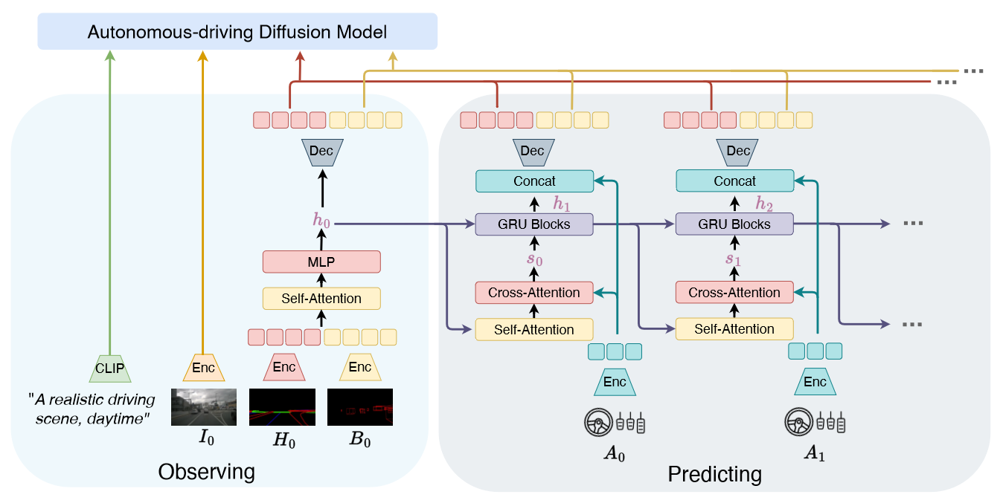
図5：ActionFormer の全体構造。初期構造条件 \( H_0 \) と \( B_0 \) はまず符号化され、1 次元の潜在空間へ平坦化される。これらの潜在特徴は連結され、自己注意層と MLP 層で処理されて隠れ状態を生成する。クロス注意層は隠れ状態と運転行動との対応関係を構築する。ゲート付き回帰ユニット（Gated Recurrent Units：GRU）を用いて将来の隠れ状態を反復的に予測する。予測された隠れ状態はさらに行動特徴と連結され、Auto-DM に入力される将来の交通構造条件へと復号される。
図中ラベル：Autonomous-driving Diffusion Model＝自動運転拡散モデル、"A realistic driving scene, daytime"＝「現実的な運転シーン、昼間」、Enc＝エンコーダ、Dec＝デコーダ、Self-Attention＝自己注意、Cross-Attention＝クロス注意、GRU Blocks＝GRU ブロック、Concat＝連結、Observing＝観測、Predicting＝予測
ActionFormer。学習済みの Auto-DM は、系列的な構造化情報 \( \{H_i\}_{i=0}^{T}, \{B_i\}_{i=0}^{T} \) に基づいて運転動画 \( \{I_i\}_{i=0}^{T} \) を生成できることを思い出してほしい。しかし動画予測タスクでは、現在のタイムスタンプより先の将来の交通構造条件は利用できない。この課題に対処するため、運転行動 \( \{A_i\}_{i=0}^{T-1} \) を活用して将来の構造条件を反復的に予測する ActionFormer を導入する。ActionFormer の全体アーキテクチャを図5に示す。まず、初期構造条件 \( H_0, B_0 \) を符号化し、1 次元の潜在空間へ平坦化する。潜在特徴は連結され、自己注意層と MLP 層によって集約されて隠れ状態 \( \mathbf{h}_0 \) を生成する。続いて、クロス注意層 \( \mathcal{F}_{ca} \) を用いて隠れ状態と運転行動との対応関係を構築する。そして潜在変数 \( \mathbf{s}_t \) を次のようにパラメータ化する。
\[ \mathbf{s}_t \sim \mathcal{N}\left(\mu_\theta\left(\mathcal{F}_{ca}(\mathbf{h}_t, A_t)\right), \sigma_\theta\left(\mathcal{F}_{ca}(\mathbf{h}_t, A_t)\right)\boldsymbol{I}\right), \tag{5} \]
ここで \( \mu_\theta, \sigma_\theta \) はガウス分布のパラメータを学習する層である。将来の隠れ状態を予測するため、ゲート付き回帰ユニット（Gated Recurrent Units：GRU）を用いて反復的に更新を行う。
\[ \mathbf{h}_{t+1} = \mathcal{F}_{\mathrm{GRU}}(\mathbf{h}_t, \mathbf{s}_t). \tag{6} \]
これらの隠れ状態は行動特徴と連結され、将来の交通構造条件へと復号される。Actionformer は将来の交通条件を特徴レベルで予測するため、ピクセルレベルでのノイズの干渉が緩和され、より頑健な予測が得られることに留意されたい。Actionformer が生成する交通構造条件とテキストプロンプト条件に加え、参照画像条件 \( I_0 \) を［2］と同様に処理する。以上の条件に基づき、Auto-DM を拡張して将来の運転動画 \( \{I_i\}_{i=1}^{T} \) と運転行動 \( \{A_i\}_{i=T}^{T+N} \) を同時に生成する。この過程を生成的確率モデルとして定式化し、同時確率を次のように分解する。
\[ \begin{aligned} &p\left(I_{0:T}, A_{0:T+N}, \mathbf{h}_{0:T}, \mathbf{s}_{0:T-1}\right) \\ &\quad = p\left(I_{1:T}, A_{T:T+N} \mid \mathbf{h}_{0:T}, \mathbf{s}_{0:T-1}, A_{0:T-1}, I_0\right) \\ &\quad\quad \prod_{t=0}^{T} p\left(\mathbf{h}_t, \mathbf{s}_t \mid \mathbf{h}_{t-1}, \mathbf{s}_{t-1}, A_t\right), \end{aligned} \tag{7} \]
ここで
\[ \begin{aligned} &p\left(\mathbf{h}_t, \mathbf{s}_t \mid \mathbf{h}_{t-1}, \mathbf{s}_{t-1}, A_t\right) \\ &\quad = p\left(\mathbf{h}_t \mid \mathbf{h}_{t-1}, \mathbf{s}_{t-1}\right) p\left(\mathbf{s}_t \mid \mathbf{h}_t, A_t\right) \\ &p\left(I_{1:T}, A_{T:T+N} \mid \mathbf{h}_{0:T}, \mathbf{s}_{0:T-1}, A_{0:T-1}, I_0\right) \\ &\quad = p\left(I_{1:T} \mid \mathbf{h}_{0:T}, \mathbf{s}_{0:T-1}, A_{0:T-1}, I_0\right) \\ &\quad\quad p\left(A_{T:T+N} \mid \mathbf{h}_{0:T}, \mathbf{s}_{0:T-1}, A_{0:T-1}, I_0\right). \end{aligned} \tag{8} \]
隠れ状態の更新 \( p(\mathbf{h}_t \mid \mathbf{h}_{t-1}, \mathbf{s}_{t-1}) \) が決定論的な過程（式6）であることを考慮すると、観測の周辺尤度 \( p(I_{1:T}, A_{T:T+N}) \) を最大化するために推論する必要があるのは潜在変数 \( \mathbf{s}_t \) のみである。そこで、変分推論を行うために変分分布 \( q_{\mathrm{vd}} \) を導入する。
\[ \begin{aligned} q_{\mathrm{vd}} &\triangleq q\left(\mathbf{h}_{1:T}, \mathbf{s}_{1:T} \mid I_{0:T}, A_{0:T+N}\right) \\ &= \prod_{t=1}^{T} q\left(\mathbf{h}_t \mid \mathbf{h}_{t-1}, \mathbf{s}_{t-1}\right) q\left(\mathbf{s}_t \mid I_{\le t}, A_{\lt t}\right), \end{aligned} \tag{9} \]
ここで \( q\left(\mathbf{h}_t \mid \mathbf{h}_{t-1}, \mathbf{s}_{t-1}\right) = p\left(\mathbf{h}_t \mid \mathbf{h}_{t-1}, \mathbf{s}_{t-1}\right) \) である。［29］と同様に、変分下界は次のように導出できる。
\[ \begin{aligned} &\log p\left(I_{1:T},\ A_{T:T+N}\right) \ge \\ &\mathbb{E}_{q\left(\mathbf{h}_{1:T}, \mathbf{s}_{1:T} \mid I_{0:T}, A_{0:T+N}\right)}\Big[\underbrace{\log p\left(I_{1:T} \mid \mathbf{h}_{0:T}, \mathbf{s}_{0:T-1}, A_{0:T-1}, I_0\right)}_{\text{video prediction}} \\ &\quad + \underbrace{\log p\left(A_{T:T+N} \mid \mathbf{h}_{0:T}, \mathbf{s}_{0:T-1}, A_{0:T-1}, I_0\right)}_{\text{action predcition}}\Big]. \end{aligned} \tag{10} \]
式中ラベル：video prediction＝動画予測、action predcition＝行動予測（原文の綴り "predcition" は "prediction" の誤植と考えられる）
なお、事後分布と事前分布のマッチング［29］は含めていない。これは、簡略化した変分下界でも同様に妥当な結果が得られることを経験的に確認したためである。式10において、動画予測部分と行動予測部分は、それぞれガウス分布 \( \mathcal{N}(\mathcal{G}(\mathbf{h}_{0:T}, A_{0:T-1}, I_0), \mathbf{I}) \) とラプラス分布 \( \mathrm{Laplace}(\pi(\mathbf{h}_{0:T}, A_{0:T-1}, I_0), 1) \) でモデル化できる。したがって、平均二乗誤差と \( L_1 \) 損失を用いて動画予測の学習を最適化する。\( \mathcal{G} \)、\( \pi \) は、ActionFormer、Auto-DM、動画デコーダ（すなわち、VAE デコーダ）、行動デコーダに含まれる学習可能な層である。行動予測の詳細としては、まず Auto-DM からマルチスケールの UNet 特徴をプーリングする。プーリングした特徴を過去の行動特徴と連結し、それを MLP 層で復号して将来の運転行動を生成する。
2 段階の学習に基づき、DriveDreamer は、交通の構造的制約、将来の運転状態の予測、そして確立された世界モデルとの相互作用を含む、運転世界の包括的な理解を獲得した。
4 実験
4.1 実験の詳細
データセット。学習データは実世界の運転データセット nuScenes［3］から取得しており、合計 700 本の学習動画と 150 本の検証動画からなる。各動画には 6 台のサラウンドビューカメラで撮影された約 20 秒の映像が含まれる。動画のフレームレートは 12Hz であり、学習に利用可能な動画フレームは約 1M 枚となる。第 1 段階の学習では、nuScenes-devkit［51］を利用して 12Hz のフレームに対応する HDMap アノテーション（車線境界、車線区分線、横断歩道）を取得し、それを画像平面に投影する。nuScenes データセットは 2Hz の 3D バウンディングボックスアノテーションしか提供していないことを考慮し、［68］の 12Hz のバウンディングボックスアノテーションでこれを補う。第 2 段階の学習では、自車のヨー角と速度を運転行動の入力として用いる。さらに、nuScenes のアノテーションからシーン記述情報（例えば、天候や時刻）を抽出し、テキスト条件として用いる。
学習。提案する Auto-DM は Stable Diffusion v1.4［57］を基盤として構築され、その元のパラメータは固定される。第 1 段階の学習のステップ 1 では、モデルをバッチサイズ 16 で 40 エポック学習する。ステップ 2 では、Auto-DM を動画フレーム長 \( N = 32 \)、空間サイズ \( 448\times 256 \) で、バッチサイズ 1 で 10 エポック学習する。第 2 段階の動画予測の学習では、モデルは 16 フレームの運転動画 \( I_{1:16} \) と 16 個の将来の運転行動 \( I_{17:32} \)（訳注：運転行動であるため \( A_{17:32} \) の誤記と考えられる）を予測し、バッチサイズ 1 で 10 エポック学習する。すべての実験は A800 GPU 上で実施し、学習率 \( 5\times 10^{-5} \) の AdamW オプティマイザ［38］を用いる。
評価。提案する DriveDreamer について、定性的評価と定量的評価の両方を用いた包括的な評価を行った。生成品質の評価には、フレーム単位の Fréchet Inception Distance（FID）［22］と Fréchet Video Distance（FVD）［63］を用い、評価対象の画像は \( 448\times 256 \) にリサイズした。さらに、生成画像が運転知覚手法の学習を強化することを検証するため、FCOS3D［66］と BEVFusion［45］をベースライン手法として、3D 物体検出により DriveDreamer を評価した。加えて、運転方策生成の性能を検証した。［30］の設定に従い、将来 3 秒間の出力運転軌跡を評価した。
4.2 制御可能な運転動画生成
提案する DriveDreamer は運転シナリオに対する深い理解を示し、多様な運転動画を制御可能に生成できる。本小節では、まず、第 1 段階の学習に基づいて DriveDreamer が構造化された交通条件のもとで多様な運転動画を生成できることを示す。また、生成された画像が運転知覚手法の学習を強化できることを検証する。さらに、DriveDreamer は異なる入力行動に応答することで汎用性を示し、車両の軌跡を制御し、その結果として多様な運転動画を生成することを可能にする。
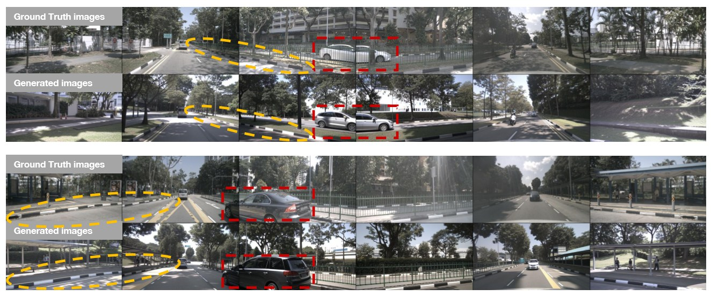
図6：生成されたマルチビュー画像の可視化。生成条件（HDMap、3D ボックス）は nuScenes 検証セットのものである。赤の矩形と黄の円で強調した領域は、生成画像がマルチビュー間の一貫性を持ち、正解条件と整合していることを示す。
図中ラベル：Ground Truth images＝正解画像、Generated images＝生成画像
| 手法 | 解像度 | データ | mAP (↑) | NDS (↑) |
|---|---|---|---|---|
| FCOS3D［66］ | 1600 × 900 | 合成データなし | 30.2 | 38.1 |
| FCOS3D［66］ | 1600 × 900 | 4K 合成データあり | 30.9 (+0.7) | 38.3 (+0.2) |
| BEVFusion［45］ | 704 × 256 | 合成データなし | 32.8 | 37.6 |
| BEVFusion［45］ | 704 × 256 | 4K 合成データあり | 35.8 (+3.0) | 39.5 (+1.9) |
表1：3D 物体検出の学習における合成データ拡張の性能。
| 手法 | 第 1 段階の学習（Auto-DM） | 第 2 段階の学習（ActionFormer） | FID (↓) | FVD (↓) |
|---|---|---|---|---|
| DriveGAN［36］ | - | - | 27.8 | 390.8 |
| DriveDreamer | 15.9 | 363.3 | ||
| DriveDreamer | ✓ | 15.3 | 349.6 | |
| DriveDreamer | ✓ | ✓ | 14.9 | 340.8 |
表2：nuScenes 検証セットにおける生成品質の比較。
図1および図6に示すように、DriveDreamer は構造化された交通条件に緻密に従う画像と動画を生成する能力を示す（さらなる可視化は補足資料にある）。重要なこととして、テキストプロンプトを操作して、天候や時間帯の変化を含む生成動画の変化を引き起こすこともできる。生成品質をさらに検証するため、（nuScenes 学習セットから）4K 件の交通条件を抽出して運転画像を生成した。生成画像を実画像と組み合わせて 3D 検出タスクの学習に用いた。表1の結果は、我々の合成データを用いた学習が 3D 検出の性能を大幅に向上させることを示している。具体的には、合成データなしで学習した場合と比較して、FCOS3D と BEVFusion の mAP 指標がそれぞれ 0.7 と 3.0 向上した。
運転動画の生成に構造化された交通条件を利用するだけでなく、DriveDreamer は異なる運転行動に適応することで、生成する運転動画を多様化する能力を示す。図1に示すように（さらなる可視化は補足資料にある）、初期フレームとそれに対応する構造情報から出発して、DriveDreamer は左折や右折を描く動画など、さまざまな運転行動に基づいて異なる動画を生成できる。まとめると、DriveDreamer は高い制御性と多様性の両方を特徴とする、幅広い運転シーン動画の生成に優れている。したがって、DriveDreamer はコーナーケースやロングテールのシナリオまで含む幅広いタスクにわたって、自動運転システムの学習に役立つことが期待される。
定量的な実験では、nuScenes 検証セットから自車の運転行動を抽出し、運転動画を生成するための条件として用いる。比較のため、Drivedreamer と同じ学習設定を用いて nuScenes データセットで DriveGAN［36］を学習する。さらに、ActionFormer を用いない Drivedreamer をベースラインとして学習する（具体的には、行動特徴をゼロパディングした構造化交通条件と直接連結する）。結果を表2に示し、生成動画の品質を評価している。特筆すべきこととして、第 1 段階の学習を行わない我々のアプローチでも、DriveGAN と比較して優れた FID と FVD のスコアを達成している。この観察は、運転シナリオを視覚的に理解するうえで強力な拡散モデルを活用することの有効性を裏付けている。さらに、第 1 段階の学習後の Drivedreamer は運転シーン内の構造化情報に対する理解が向上し、より高品質な動画生成につながることが明らかになった。最後に、提案する ActionFormer が第 1 段階の学習で獲得した交通構造情報の知識を効果的に活用していることを確認した。連結によるベースライン手法と比較して、ActionFormer は入力行動に基づいて将来の構造化情報を反復的に更新し、生成動画の品質をさらに高める。
4.3 運転行動の生成
| 手法 | 視覚情報 | 行動情報 | \( L_2 \) 平均 (m) | 衝突率平均 (%) |
|---|---|---|---|---|
| ST-P3［30］ | ✓ | 2.11 | 0.71 | |
| UniAD［31］ | ✓ | 1.65 | 0.31 | |
| AD-MLP［75］ | ✓ | 0.29 | 0.19 | |
| VAD［33］ | ✓ | ✓ | 0.37 | 0.14 |
| DriveDreamer | ✓ | ✓ | 0.29 | 0.15 |
表3：nuScenes 検証セットにおけるオープンループ計画の性能。評価設定は ST-P3［30］と同一である。
高度に制御可能な運転動画を生成する能力に加え、DriveDreamer は妥当な運転行動を予測する能力も示す。図1に示すように、初期フレームの条件と過去の運転行動が与えられると、DriveDreamer は実世界のシナリオに沿った将来の運転行動を生成できる。さらに、予測精度の定量評価を行う。具体的には、MLP 層［75］を用いて過去の運転行動情報を符号化する。加えて、マルチスケールの UNet 特徴を視覚的手がかりとしてプーリングする。そして 2 つのモダリティの特徴を連結し、将来の運転軌跡を学習する（実装の詳細は補足資料にある）。nuScenes データセットにおけるオープンループ評価の結果を表3に示す。注目すべきことに、DriveDreamer の平均 \( L_2 \) 軌跡誤差はわずか 0.29m であり、マルチモダリティ手法である VAD［33］の性能を上回っている。加えて、DriveDreamer は［75］で報告された平均衝突率を相対的に 21% 低減しており、DriveDreamer が学習した視覚特徴がエンドツーエンド自動運転に寄与し、運転の安全性を高めることが確認された。
5 議論と結論
DriveDreamer は、世界モデリングの分野、特に自動運転の文脈において重要な進歩である。実世界の運転シナリオに焦点を当て、拡散モデルの力を活用することで、DriveDreamer は複雑な環境を理解し、高品質な運転動画を生成し、現実的な運転方策を策定する能力を実証した。従来の研究が主にゲーム環境やシミュレーション環境に集中していたのに対し、DriveDreamer は世界モデリングの境界を、実際の運転状況の複雑さを包含するまでに押し広げる。DriveDreamer は自動運転における将来の研究への道を開き、この重要な領域においてより正確なモデリングと意思決定を行うための実世界表現の重要性を強調するものである。
参考文献
参考文献は原文のまま掲載した。
- Fan Bao, Shen Nie, Kaiwen Xue, Chongxuan Li, Shi Pu, Yaole Wang, Gang Yue, Yue Cao, Hang Su, and Jun Zhu. One transformer fits all distributions in multi-modal diffusion at scale. arXiv preprint arXiv:2303.06555, 2023. 2
- Andreas Blattmann, Robin Rombach, Huan Ling, Tim Dockhorn, Seung Wook Kim, Sanja Fidler, and Karsten Kreis. Align your latents: High-resolution video synthesis with latent diffusion models. In CVPR, 2023. 5, 6
- Holger Caesar, Varun Bankiti, Alex H. Lang, Sourabh Vora, Venice Erin Liong, Qiang Xu, Anush Krishnan, Yu Pan, Giancarlo Baldan, and Oscar Beijbom. nuscenes: A multimodal dataset for autonomous driving. CVPR, 2019. 7, 12
- Dian Chen and Philipp Krähenbühl. Learning from all vehicles. In CVPR, 2022. 5
- Li Chen, Penghao Wu, Kashyap Chitta, Bernhard Jaeger, Andreas Geiger, and Hongyang Li. End-to-end autonomous driving: Challenges and frontiers. arXiv preprint arXiv:2306.16927, 2023. 2, 3
- Rui Chen, Yongwei Chen, Ningxin Jiao, and Kui Jia. Fantasia3d: Disentangling geometry and appearance for high-quality text-to-3d content creation. arXiv preprint arXiv:2303.13873, 2023. 2
- Felipe Codevilla, Eder Santana, Antonio M López, and Adrien Gaidon. Exploring the limitations of behavior cloning for autonomous driving. In CVPR, 2019. 2
- Emily Denton and Rob Fergus. Stochastic video generation with a learned prior. In ICML, 2018. 2, 3
- Prafulla Dhariwal and Alexander Nichol. Diffusion models beat gans on image synthesis. NeurIPS, 2021. 3
- Stefan Elfwing, Eiji Uchibe, and Kenji Doya. Sigmoid-weighted linear units for neural network function approximation in reinforcement learning. Neural networks, 2018. 12
- Jean-Yves Franceschi, Edouard Delasalles, Mickaël Chen, Sylvain Lamprier, and Patrick Gallinari. Stochastic latent residual video prediction. In ICML, 2020. 2, 3
- Ruiyuan Gao, Kai Chen, Enze Xie, Lanqing Hong, Zhenguo Li, Dit-Yan Yeung, and Qiang Xu. Magicdrive: Street view generation with diverse 3d geometry control. arXiv preprint arXiv:2310.02601, 2023. 3
- Zeyu Gao, Yao Mu, Ruoyan Shen, Chen Chen, Yangang Ren, Jianyu Chen, Shengbo Eben Li, Ping Luo, and Yanfeng Lu. Enhance sample efficiency and robustness of end-to-end urban autonomous driving via semantic masked world model. arXiv preprint arXiv:2210.04017, 2022. 2, 3
- Shuyang Gu, Dong Chen, Jianmin Bao, Fang Wen, Bo Zhang, Dongdong Chen, Lu Yuan, and Baining Guo. Vector quantized diffusion model for text-to-image synthesis. In CVPR, 2022. 2
- David Ha and Jürgen Schmidhuber. Recurrent world models facilitate policy evolution. NeurIPS, 2018. 2, 3
- Danijar Hafner, Kuang-Huei Lee, Ian Fischer, and Pieter Abbeel. Deep hierarchical planning from pixels. NeurIPS, 2022. 3
- Danijar Hafner, Timothy Lillicrap, Jimmy Ba, and Mohammad Norouzi. Dream to control: Learning behaviors by latent imagination. arXiv preprint arXiv:1912.01603, 2019. 2, 3
- Danijar Hafner, Timothy Lillicrap, Mohammad Norouzi, and Jimmy Ba. Mastering atari with discrete world models. arXiv preprint arXiv:2010.02193, 2020. 2, 3
- Danijar Hafner, Jurgis Pasukonis, Jimmy Ba, and Timothy Lillicrap. Mastering diverse domains through world models. arXiv preprint arXiv:2301.04104, 2023. 2, 3
- Danijar Hafner, Jurgis Pasukonis, Jimmy Ba, and Timothy Lillicrap. Mastering diverse domains through world models. arXiv preprint arXiv:2301.04104, 2023. 3
- William Harvey, Saeid Naderiparizi, Vaden Masrani, Christian Weilbach, and Frank Wood. Flexible diffusion modeling of long videos. NeurIPS, 2022. 2, 3
- Martin Heusel, Hubert Ramsauer, Thomas Unterthiner, Bernhard Nessler, and Sepp Hochreiter. Gans trained by a two time-scale update rule converge to a local nash equilibrium. NeurIPS, 2017. 7
- Jonathan Ho, William Chan, Chitwan Saharia, Jay Whang, Ruiqi Gao, Alexey Gritsenko, Diederik P Kingma, Ben Poole, Mohammad Norouzi, David J Fleet, et al. Imagen video: High definition video generation with diffusion models. arXiv preprint arXiv:2210.02303, 2022. 2, 3
- Jonathan Ho, Ajay Jain, and Pieter Abbeel. Denoising diffusion probabilistic models. NeurIPS, 2020. 3
- Jonathan Ho, Chitwan Saharia, William Chan, David J Fleet, Mohammad Norouzi, and Tim Salimans. Cascaded diffusion models for high fidelity image generation. JMLR, 2022. 3
- Sepp Hochreiter and Jürgen Schmidhuber. Long short-term memory. Neural computation, 1997. 3
- Tobias Höppe, Arash Mehrjou, Stefan Bauer, Didrik Nielsen, and Andrea Dittadi. Diffusion models for video prediction and infilling. arXiv preprint arXiv:2206.07696, 2022. 3
- Jun-Ting Hsieh, Bingbin Liu, De-An Huang, Li F Fei-Fei, and Juan Carlos Niebles. Learning to decompose and disentangle representations for video prediction. NeurIPS, 2018. 3
- Anthony Hu, Gianluca Corrado, Nicolas Griffiths, Zachary Murez, Corina Gurau, Hudson Yeo, Alex Kendall, Roberto Cipolla, and Jamie Shotton. Model-based imitation learning for urban driving. NeurIPS, 2022. 2, 3, 7
- Shengchao Hu, Li Chen, Penghao Wu, Hongyang Li, Junchi Yan, and Dacheng Tao. St-p3: End-to-end vision-based autonomous driving via spatial-temporal feature learning. In ECCV, 2022. 7, 9
- Yihan Hu, Jiazhi Yang, Li Chen, Keyu Li, Chonghao Sima, Xizhou Zhu, Siqi Chai, Senyao Du, Tianwei Lin, Wenhai Wang, Lewei Lu, Xiaosong Jia, Qiang Liu, Jifeng Dai, Yu Qiao, and Hongyang Li. Planning-oriented autonomous driving. In CVPR, 2023. 5, 9
- Lianghua Huang, Di Chen, Yu Liu, Yujun Shen, Deli Zhao, and Jingren Zhou. Composer: Creative and controllable image synthesis with composable conditions. arXiv preprint arXiv:2302.09778, 2023. 3
- Bo Jiang, Shaoyu Chen, Qing Xu, Bencheng Liao, Jiajie Chen, Helong Zhou, Qian Zhang, Wenyu Liu, Chang Huang, and Xinggang Wang. Vad: Vectorized scene representation for efficient autonomous driving. arXiv preprint arXiv:2303.12077, 2023. 9
- Nal Kalchbrenner, Aäron Oord, Karen Simonyan, Ivo Danihelka, Oriol Vinyals, Alex Graves, and Koray Kavukcuoglu. Video pixel networks. In ICML, 2017. 3
- Levon Khachatryan, Andranik Movsisyan, Vahram Tadevosyan, Roberto Henschel, Zhangyang Wang, Shant Navasardyan, and Humphrey Shi. Text2video-zero: Text-to-image diffusion models are zero-shot video generators. arXiv preprint arXiv:2303.13439, 2023. 2, 3
- Seung Wook Kim, Jonah Philion, Antonio Torralba, and Sanja Fidler. Drivegan: Towards a controllable high-quality neural simulation. In CVPR, 2021. 3, 8
- Seung Wook Kim, Yuhao Zhou, Jonah Philion, Antonio Torralba, and Sanja Fidler. Learning to simulate dynamic environments with gamegan. In CVPR, 2020. 3
- Diederik P Kingma and Jimmy Ba. Adam: A method for stochastic optimization. arXiv preprint arXiv:1412.6980, 2014. 7
- Diederik P Kingma and Max Welling. Auto-encoding variational bayes. arXiv preprint arXiv:1312.6114, 2013. 3
- Manoj Kumar, Mohammad Babaeizadeh, Dumitru Erhan, Chelsea Finn, Sergey Levine, Laurent Dinh, and Durk Kingma. Videoflow: A flow-based generative model for video. arXiv preprint arXiv:1903.01434, 2019. 3
- Xiaofan Li, Yifu Zhang, and Xiaoqing Ye. Drivingdiffusion: Layout-guided multi-view driving scene video generation with latent diffusion model. arXiv preprint arXiv:2310.07771, 2023. 3
- Yuheng Li, Haotian Liu, Qingyang Wu, Fangzhou Mu, Jianwei Yang, Jianfeng Gao, Chunyuan Li, and Yong Jae Lee. Gligen: Open-set grounded text-to-image generation. In CVPR, 2023. 2, 4
- Chen-Hsuan Lin, Jun Gao, Luming Tang, Towaki Takikawa, Xiaohui Zeng, Xun Huang, Karsten Kreis, Sanja Fidler, Ming-Yu Liu, and Tsung-Yi Lin. Magic3d: High-resolution text-to-3d content creation. In CVPR, 2023. 2
- Jessy Lin, Yuqing Du, Olivia Watkins, Danijar Hafner, Pieter Abbeel, Dan Klein, and Anca Dragan. Learning to model the world with language. arXiv preprint arXiv:2308.01399, 2023. 3
- Zhijian Liu, Haotian Tang, Alexander Amini, Xinyu Yang, Huizi Mao, Daniela L Rus, and Song Han. Bevfusion: Multitask multi-sensor fusion with unified bird's-eye view representation. In ICRA, 2023. 7, 8, 13
- Michael Mathieu, Camille Couprie, and Yann LeCun. Deep multi-scale video prediction beyond mean square error. arXiv preprint arXiv:1511.05440, 2015. 3
- Ben Mildenhall, Pratul P Srinivasan, Matthew Tancik, Jonathan T Barron, Ravi Ramamoorthi, and Ren Ng. Nerf: Representing scenes as neural radiance fields for view synthesis. Communications of the ACM, 2021. 4, 12
- Chong Mou, Xintao Wang, Liangbin Xie, Jian Zhang, Zhongang Qi, Ying Shan, and Xiaohu Qie. T2i-adapter: Learning adapters to dig out more controllable ability for text-to-image diffusion models. arXiv preprint arXiv:2302.08453, 2023. 2
- Alex Nichol, Prafulla Dhariwal, Aditya Ramesh, Pranav Shyam, Pamela Mishkin, Bob McGrew, Ilya Sutskever, and Mark Chen. Glide: Towards photorealistic image generation and editing with text-guided diffusion models. arXiv preprint arXiv:2112.10741, 2021. 2, 3
- Alexander Quinn Nichol and Prafulla Dhariwal. Improved denoising diffusion probabilistic models. In ICML, 2021. 3
- nuScenes Contributors. The devkit of the nuscenes dataset. https://github.com/nutonomy/nuscenes-devkit, 2019. 7
- Minting Pan, Xiangming Zhu, Yunbo Wang, and Xiaokang Yang. Iso-dream: Isolating and leveraging noncontrollable visual dynamics in world models. NeurIPS, 2022. 2, 3
- Ben Poole, Ajay Jain, Jonathan T Barron, and Ben Mildenhall. Dreamfusion: Text-to-3d using 2d diffusion. arXiv preprint arXiv:2209.14988, 2022. 2
- Alec Radford, Jong Wook Kim, Chris Hallacy, Aditya Ramesh, Gabriel Goh, Sandhini Agarwal, Girish Sastry, Amanda Askell, Pamela Mishkin, Jack Clark, et al. Learning transferable visual models from natural language supervision. In ICML. 4
- Aditya Ramesh, Prafulla Dhariwal, Alex Nichol, Casey Chu, and Mark Chen. Hierarchical text-conditional image generation with clip latents. arXiv preprint arXiv:2204.06125, 2022. 2
- MarcAurelio Ranzato, Arthur Szlam, Joan Bruna, Michael Mathieu, Ronan Collobert, and Sumit Chopra. Video (language) modeling: a baseline for generative models of natural videos. arXiv preprint arXiv:1412.6604, 2014. 3
- Robin Rombach, Andreas Blattmann, Dominik Lorenz, Patrick Esser, and Björn Ommer. High-resolution image synthesis with latent diffusion models. In CVPR, 2022. 2, 3, 4, 5, 7
- Masaki Saito, Eiichi Matsumoto, and Shunta Saito. Temporal generative adversarial nets with singular value clipping. In ICCV, 2017. 3
- Younggyo Seo, Danijar Hafner, Hao Liu, Fangchen Liu, Stephen James, Kimin Lee, and Pieter Abbeel. Masked world models for visual control. In CoRL, 2023. 3
- Uriel Singer, Adam Polyak, Thomas Hayes, Xi Yin, Jie An, Songyang Zhang, Qiyuan Hu, Harry Yang, Oron Ashual, Oran Gafni, et al. Make-a-video: Text-to-video generation without text-video data. arXiv preprint arXiv:2209.14792, 2022. 2, 3
- Nitish Srivastava, Elman Mansimov, and Ruslan Salakhudinov. Unsupervised learning of video representations using lstms. In ICML, 2015. 3
- Sergey Tulyakov, Ming-Yu Liu, Xiaodong Yang, and Jan Kautz. Mocogan: Decomposing motion and content for video generation. In CVPR, 2018. 3
- Thomas Unterthiner, Sjoerd Van Steenkiste, Karol Kurach, Raphael Marinier, Marcin Michalski, and Sylvain Gelly. Towards accurate generative models of video: A new metric & challenges. arXiv preprint arXiv:1812.01717, 2018. 7
- Vikram Voleti, Alexia Jolicoeur-Martineau, and Chris Pal. Mcvd-masked conditional video diffusion for prediction, generation, and interpolation. NeurIPS, 2022. 3
- Carl Vondrick, Hamed Pirsiavash, and Antonio Torralba. Generating videos with scene dynamics. NeurIPS, 29, 2016. 3
- Tai Wang, Xinge Zhu, Jiangmiao Pang, and Dahua Lin. Fcos3d: Fully convolutional one-stage monocular 3d object detection. In CVPR, 2021. 7, 8, 13
- Xiang Wang, Hangjie Yuan, Shiwei Zhang, Dayou Chen, Jiuniu Wang, Yingya Zhang, Yujun Shen, Deli Zhao, and Jingren Zhou. Videocomposer: Compositional video synthesis with motion controllability. arXiv preprint arXiv:2306.02018, 2023. 2, 3
- Xiaofeng Wang, Zheng Zhu, Yunpeng Zhang, Guan Huang, Yun Ye, Wenbo Xu, Ziwei Chen, and Xingang Wang. Are we ready for vision-centric driving streaming perception? the asap benchmark. In CVPR, 2023. 7
- Zhengyi Wang, Cheng Lu, Yikai Wang, Fan Bao, Chongxuan Li, Hang Su, and Jun Zhu. Prolificdreamer: High-fidelity and diverse text-to-3d generation with variational score distillation. arXiv preprint arXiv:2305.16213, 2023. 2
- Dirk Weissenborn, Oscar Täckström, and Jakob Uszkoreit. Scaling autoregressive video models. arXiv preprint arXiv:1906.02634, 2019. 3
- Philipp Wu, Alejandro Escontrela, Danijar Hafner, Pieter Abbeel, and Ken Goldberg. Daydreamer: World models for physical robot learning. In CoRL, 2023. 3
- Kairui Yang, Enhui Ma, Jibin Peng, Qing Guo, Di Lin, and Kaicheng Yu. Bevcontrol: Accurately controlling street-view elements with multi-perspective consistency via bev sketch layout. arXiv preprint arXiv:2308.01661, 2023. 3
- Ling Yang, Zhilong Zhang, Yang Song, Shenda Hong, Runsheng Xu, Yue Zhao, Yingxia Shao, Wentao Zhang, Bin Cui, and Ming-Hsuan Yang. Diffusion models: A comprehensive survey of methods and applications. arXiv preprint arXiv:2209.00796, 2022. 2
- Ruihan Yang, Prakhar Srivastava, and Stephan Mandt. Diffusion probabilistic modeling for video generation. arXiv preprint arXiv:2203.09481, 2022. 2, 3
- Jiang-Tian Zhai, Ze Feng, Jihao Du, Yongqiang Mao, Jiang-Jiang Liu, Zichang Tan, Yifu Zhang, Xiaoqing Ye, and Jingdong Wang. Rethinking the open-loop evaluation of end-to-end autonomous driving in nuscenes. arXiv preprint arXiv:2305.10430, 2023. 9, 12
- Lvmin Zhang, Anyi Rao, and Maneesh Agrawala. Adding conditional control to text-to-image diffusion models, 2023. 2
- Yunpeng Zhang, Zheng Zhu, Wenzhao Zheng, Junjie Huang, Guan Huang, Jie Zhou, and Jiwen Lu. Beverse: Unified perception and prediction in birds-eye-view for vision-centric autonomous driving. arXiv preprint arXiv:2205.09743, 2022. 5
補足資料では、まずモデルアーキテクチャと合成データによる学習の詳細を含む、DriveDreamer の実装の詳細を説明する。次に、追加の可視化結果を示す。
6 実装の詳細
条件エンコーダ。DriveDreamer では、参照画像、HDMap、3D ボックス、行動を含むさまざまな条件入力を埋め込むために、多様なエンコーダを用いる。これらのエンコーダの詳細なアーキテクチャを表4に示す。参照画像 \( I \in \mathcal{R}^{H\times W\times 3} \) や HDMap \( H \in \mathcal{R}^{H\times W\times 3} \) のような空間的に整合した条件には、2D 畳み込み層のスタックを用いてダウンサンプリングを行い、最終的な出力次元が拡散ノイズの次元と一致するようにする。3D ボックス \( B \in \mathcal{R}^{N\times N_B\times 16} \) や行動 \( A \in \mathcal{R}^{N\times 2} \) のような非構造化条件には、多層パーセプトロン（Multi-layer Perceptron：MLP）層を用いて特徴を符号化する。
| 条件 | 層の説明 | 出力サイズ |
|---|---|---|
| Ref. Img.（Step A） | Conv2D, 4 × 4, S4 | \( H/4\times W/4\times 4 \) |
| Ref. Img.（Step B） | Conv2D, 4 × 4, S4 | \( H/16\times W/16\times 4 \) |
| Ref. Img.（Step C） | Conv2D, 4 × 4, S4 | \( H/64\times W/64\times 8 \) |
| HDMap（Step A） | Conv2D, 4 × 4, S4 | \( H/4\times W/4\times 4 \) |
| HDMap（Step B） | Conv2D, 4 × 4, S4 | \( H/16\times W/16\times 4 \) |
| HDMap（Step C） | Conv2D, 4 × 4, S4 | \( H/64\times W/64\times 8 \) |
| 3D Box（Step A） | FourierEmbedder［47］ | \( N\times N_B\times 256 \) |
| 3D Box（Step B） | MLP | \( N\times N_B\times 512 \) |
| 3D Box（Step C） | MLP | \( N\times N_B\times 768 \) |
| Action（Step A） | MLP | \( N\times 32 \) |
| Action（Step B） | MLP | \( N\times 128 \) |
表4：エンコーダのアーキテクチャの詳細。S はストライドを表し、各畳み込み層と MLP 層の後には Sigmoid Linear Units［10］が続く。
表中の語：Ref. Img.＝参照画像、3D Box＝3D ボックス、Action＝行動、Step A／B／C＝ステップ A／B／C（エンコーダ内の段）
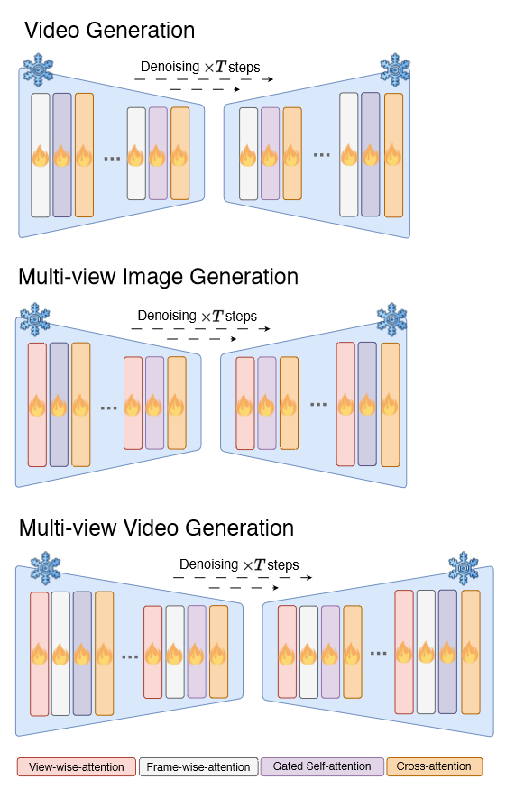
図7：動画生成、マルチビュー画像生成、マルチビュー動画生成のモデルアーキテクチャの比較。
図中ラベル：Video Generation＝動画生成、Multi-view Image Generation＝マルチビュー画像生成、Multi-view Video Generation＝マルチビュー動画生成、Denoising ×T steps＝デノイズ ×T ステップ、View-wise-attention＝ビュー単位の注意、Frame-wise-attention＝フレーム単位の注意、Gated Self-attention＝ゲート付き自己注意、Cross-attention＝クロス注意
マルチビュー生成。DriveDreamer のフレームワークは、マルチビューの画像／動画生成へ容易に拡張できる。動画生成、マルチビュー画像生成、マルチビュー動画生成のモデルアーキテクチャの比較を図7に示す。マルチビュー画像生成では、フレーム単位の注意層がビュー単位の注意層に置き換えられる点を除き、モデルのフレームワークは動画生成と同じである。また、ビュー単位の注意層は隣接するビュー間のみで対応関係を構築する。マルチビュー動画生成では、ビュー単位の注意層とフレーム単位の注意層を積み重ねて拡散の潜在特徴を処理し、その結果、ビュー間およびフレーム間で一貫した動画が得られる（図8参照）。
行動予測のアーキテクチャ。行動予測では、まずマルチモーダルな特徴を連結する。
\[ \mathrm{CONCAT}(\mathcal{F}_{\mathrm{p}}(U_0), \mathcal{F}_{\mathrm{p}}(U_1), \mathcal{F}_{\mathrm{p}}(U_2), \mathcal{F}_{\mathrm{p}}(U_3), A_f), \tag{11} \]
ここで \( \mathcal{F}_{\mathrm{p}} \) は平均プーリング操作、\( U_i\ (i = 0, 1, 2, 3) \) はマルチスケールの UNet 特徴、\( A_f \) は符号化された運転行動（すなわち、速度とヨー角）の特徴である。次に、MLP 層［75］を用いて将来の運転行動を学習する。軌跡予測の評価では、［75］に従い、\( A_f \) を高レベルコマンド、加速度、過去の軌跡からも追加で抽出し、［75］と同じ行動特徴エンコーダを用いる。
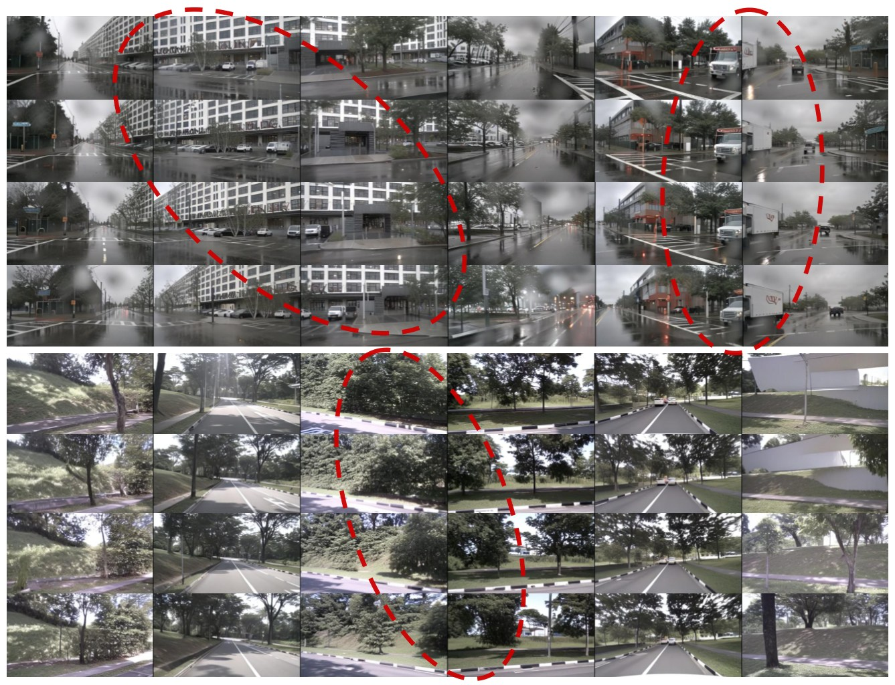
図8：生成されたマルチビュー動画の可視化。赤の円で強調した領域は、生成動画がビュー間およびフレーム間で一貫していることを示す。
合成データによる学習。DriveDreamer が生成したデータを活用して、3D 検出タスクの学習を拡張する。具体的には、DriveDreamer をより高解像度の画像でファインチューニングする。学習データは nuScenes［3］のものである。その結果、DriveDreamer は解像度 768 × 448 の高忠実度な画像を生成できる。次に、生成画像を元の解像度 1600 × 900 にリサイズし、さまざまな既製の 3D 検出器の学習に利用できるようにする。学習過程では、nuScenes 学習セットから 4000 サンプル（3D ボックスと HDMap）を無作為に選択し、マルチビュー画像の生成に用いる。これらの合成データを元の学習セットと混合して 3D 検出器を学習する。実験では、各ベースライン（すなわち、FCOS3D［66］と BEVFusion［45］）を 12 エポック学習する。表1に示した結果は、我々のアプローチが下流タスクの性能を大幅に向上させることを示している。
7 可視化
図9に示すように、DriveDreamer は HDMap や 3D ボックスなどの要素からなる構造化された交通条件に緻密に従う、多様な運転シーン動画の生成において顕著な能力を示す。重要なこととして、テキストプロンプトを操作して、天候や時間帯の変化を含む生成動画の変化を引き起こすこともできる。この高い適応性は、生成される動画出力の多面性に大きく寄与する。運転動画の生成に構造化された交通条件を利用するだけでなく、DriveDreamer は異なる運転行動に適応することで、生成する運転動画を多様化する能力を示す。図10に示すように、初期フレームとそれに対応する構造情報から出発して、DriveDreamer は左折や右折を描く動画など、さまざまな運転行動に基づいて異なる動画を生成できる。高度に制御可能な運転動画を生成する能力に加え、DriveDreamer は妥当な運転行動を予測する能力も示す。図11に示すように、初期フレームの条件と過去の運転行動が与えられると、DriveDreamer は実世界のシナリオに沿った将来の運転行動を生成できる。生成された行動を対応する正解動画と比較分析すると、DriveDreamer は交差点、信号機の遵守、右左折の実行といった複雑な状況においても、一貫して理にかなった運転行動を予測していることがわかる。
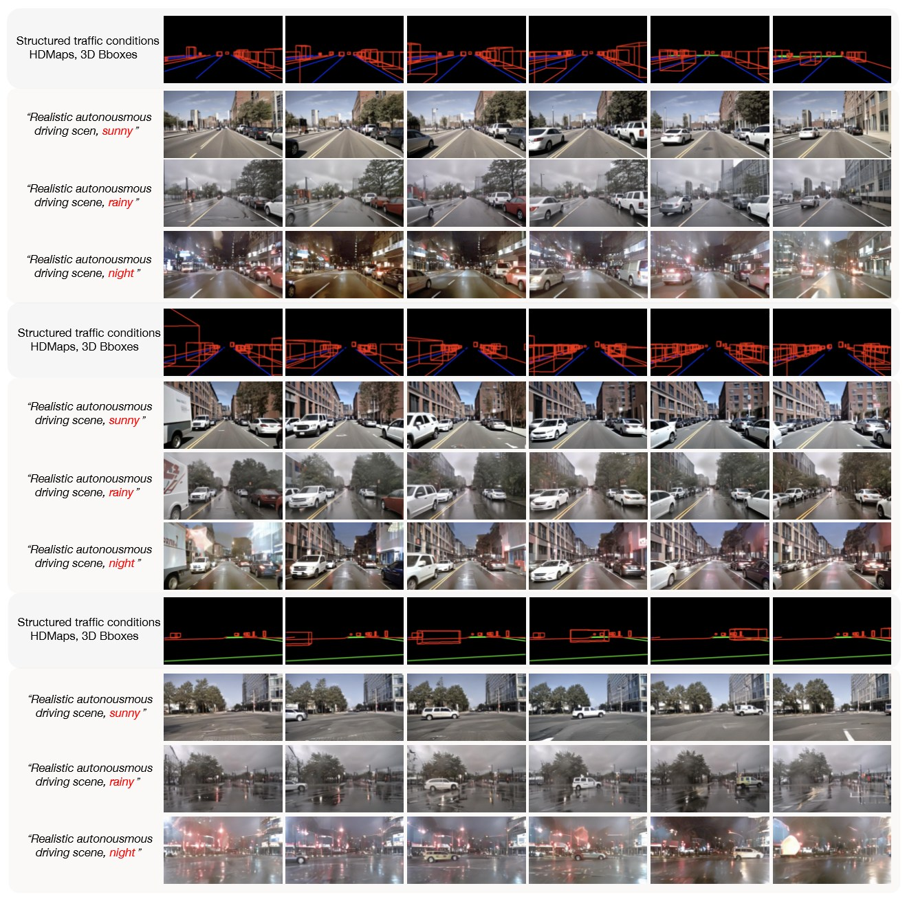
図9：構造化された交通条件（HDMap と 3D ボックス）による運転動画生成。テキストプロンプトを利用して運転シナリオのスタイル（例えば、天候や時間帯）を調整している。
図中ラベル：Structured traffic conditions HDMaps, 3D Bboxes＝構造化された交通条件（HDMap、3D バウンディングボックス）、"Realistic autonousmous driving scene, sunny / rainy / night"＝「現実的な自動運転シーン、晴れ／雨／夜」（原図の綴り "autonousmous"、"scen" は "autonomous"、"scene" の誤植と考えられる）
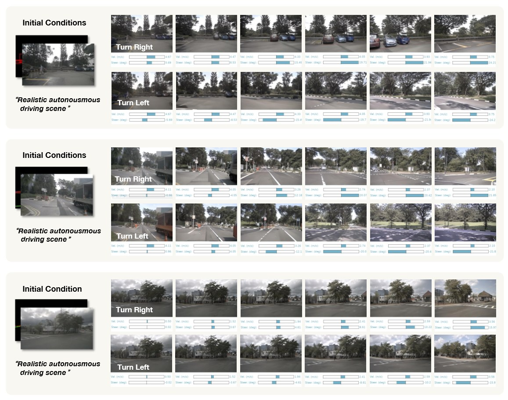
図10：運転行動との相互作用による将来の運転動画生成。異なる運転行動（例えば、左折、右折）により、それぞれに対応する運転動画を生成できる。
図中ラベル：Initial Conditions / Initial Condition＝初期条件、"Realistic autonousmous driving scene"＝「現実的な自動運転シーン」、Turn Right＝右折、Turn Left＝左折、Vel. (m/s)＝速度（m/s）、Steer. (deg)＝操舵角（度）
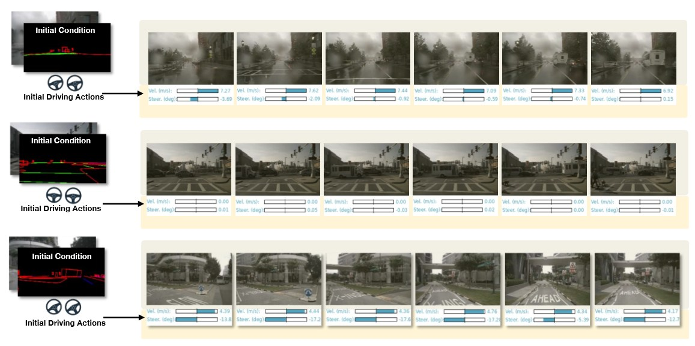
図11：予測された将来の運転行動と、対応する正解の運転動画の可視化。
図中ラベル：Initial Condition＝初期条件、Initial Driving Actions＝初期運転行動、Vel. (m/s)＝速度（m/s）、Steer. (deg)＝操舵角（度）